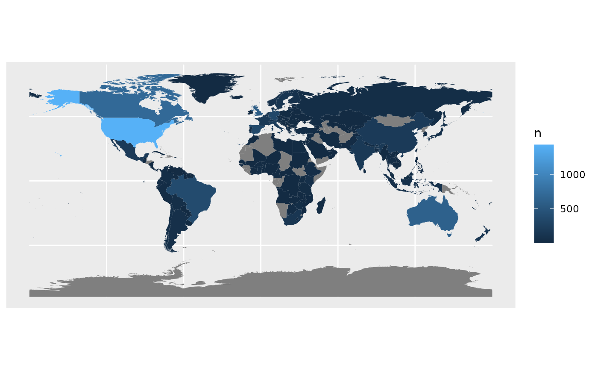

This function downloads and plots the GADM and IPBES regions according to a list of ISO codes provided.
Usage
map_country_codes(
data = NULL,
values = NULL,
map_type = "countries",
geodata_path = tempfile()
)Arguments
- data
data.frameortibblecontaining at least one column callediso2cor `iso3c.- values
The name of the column to be plotted as the value in the maps. This is also used for the legend title.
- map_type
A character string specifying the type of map to plot. Must be one of 'countries', 'regions', or 'subregions'. Default is 'countries'.
- geodata_path
A character string specifying the path to store the geospatial directory to download data to. Default is a temporary file.
Examples
map_country_codes()
#> Warning: No data provided. Using default country codes.
#> Warning: Some values were not matched unambiguously: XK
#> Warning: The following countries are not in the world dataset:
#> MCO, NA
#> and will therefore not be plotted!

map_country_codes(iso3c = c("USA", "CAN"), map_type = "regions")
#> Error in map_country_codes(iso3c = c("USA", "CAN"), map_type = "regions"): unused argument (iso3c = c("USA", "CAN"))